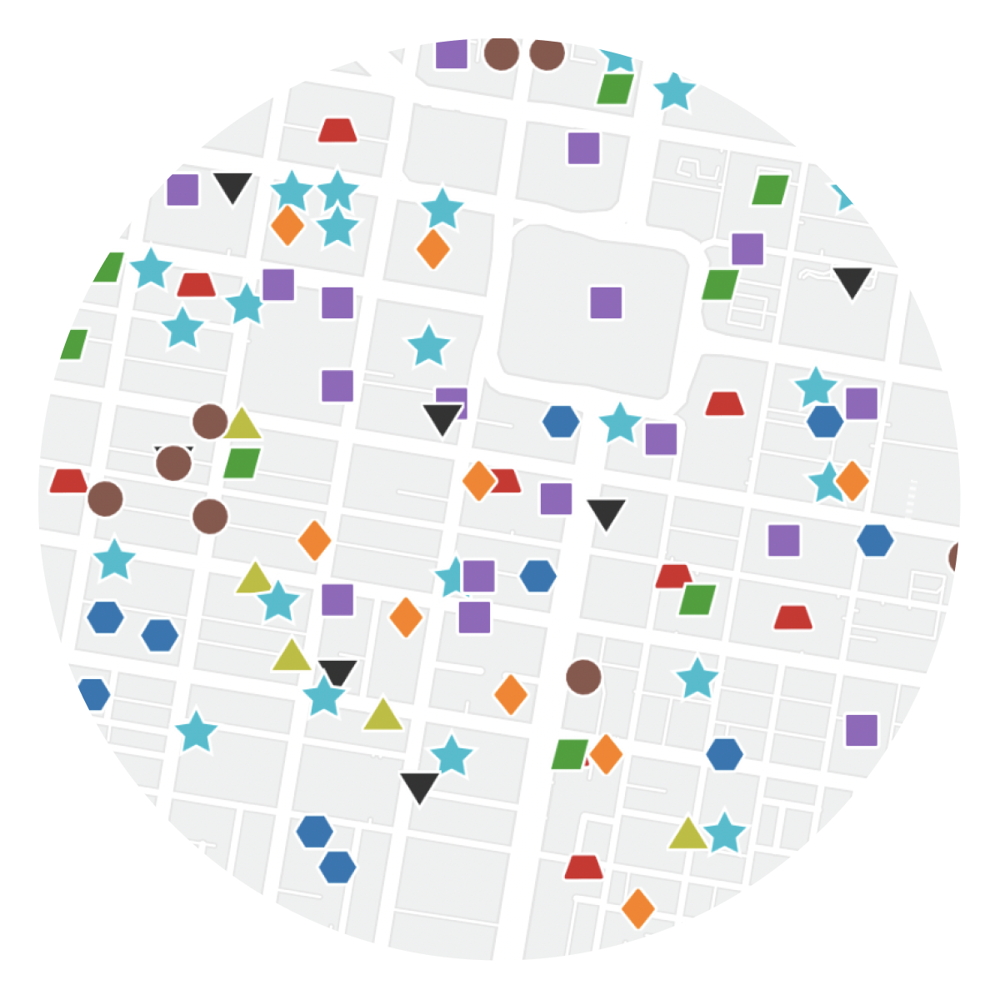

TextureMap includes resources for polygon,
line, and point data. Every style
can be modified to match your color palette and adapt to the
specific needs of your map.
Polygons
A variety of subtle pattern fills
Lines
Compound lines with dashes and gaps

Points
Simple, recognizable geometric shapes
The bigger picture
Digital maps have enabled a revolution in wayfinding, planning,
and analysis. But for many people, a map can be a barrier to using
a website.
During the Covid-19 pandemic,
blind people were blocked from booking vaccine appointments
because a website required users to interact with a map to
complete the process. As cartographers, designers, and developers,
we need to do better.
One rule of thumb is to think of a map as a supplement to more
accessible forms of information and interaction. Offer data as
tables, lists, and text. Design workflows that don’t depend on a
map to get to the next step. Ask: if the map disappeared, could a
user still complete their task?
TextureMap can make your map work better for colorblind users. But
we want to be clear that it isn’t a complete solution. For a truly
accessible experience, you will need to provide your users with a
great experience that is not centered on a map.